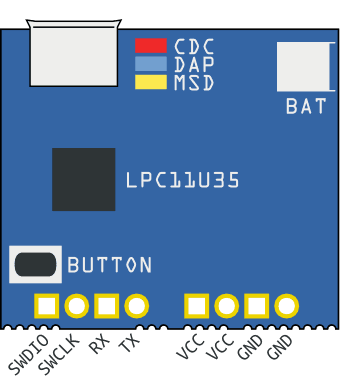
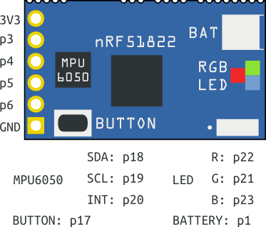
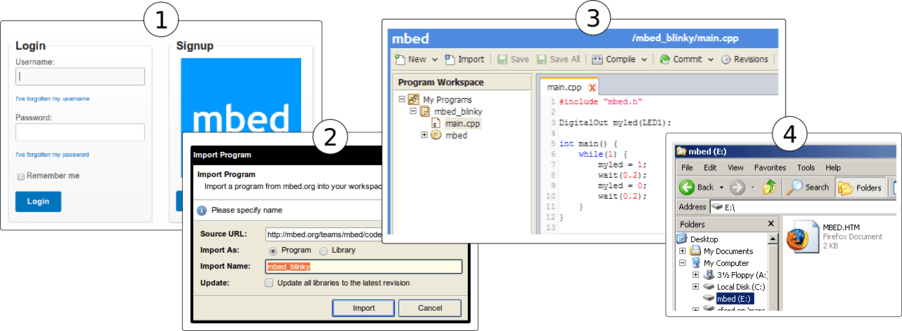
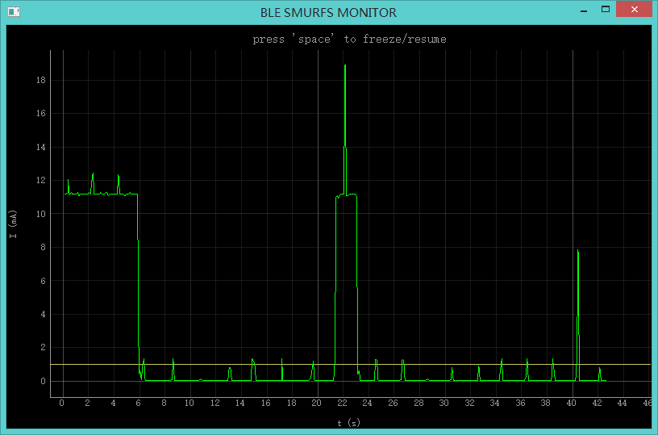

The Tiny BLE is a Bluetooth Low Energy development board designed with low energy consumption and small size in mind. It's integrated with current measurement feature to provide real time energy consumption data, which is essential for developers to optimize software to design long battery life devices. It supports ARM mbed cloud-based IDE with an handy C/C++ SDK and a large number of open source libraries, which makes prototyping and development extremely easy.
With its modular design, we can divide it into two parts - CMSIS DAP interface part and BLE part. The CMSIS DAP interface part is like the Swiss army knife. It provides drag-n-drop programming, CMSIS DAP debug, USB virtual serial port, current measurement and battery charging. The BLE part is built on the Nordic nRF51822 with Bluetooth Low Energy 2.4GHz multiprotocol radio and a 32 bit ARM Cortex-M0 core running 16MHz. MPU6050, a 6 DOF with 3D accelerometer and 3D gyroscope, is integrated to provide motion detect feature.
 
| Specification | Value |
|---|---|
| Microcontroller | nRF51822QFAA; LPC11U35FHI33 |
| Outline Dimension | 43.3mm x 29.0mm x 4.3mm |
| Power supply | USB/Battery(JST-1.0 Battery Holder) |

#include "mbed.h"
DigitalOut red(p22); // RED LED
DigitalOut green(p21); // GREEN LED
DigitalOut blue(p23); // BLUE LED
int main()
{
while (true) {
blue = !blue;
wait(0.1);
}
}
Seeed_Tiny_BLE_Get_Started program includes detecting motions, button and battery level. It's a good reference to get started.
To enable SWD debug and get debug message through USB Virtual serial, please install the driver from mbed.
Changing the baud rate of the USB virtual serial port to 4000000+ will trigger current measurement. We designed a tool - Tiny BLE MONITOR for you to get the power consumption information easily.

The latest firmware version for the Arch BLE is v0221 built at Feb 06 2015. To check your firmware version and built date, open the MBED.HTM or DETAILS.TXT of your MBED disk in a text editor.
Changelog:
Firmware:
We customized a DFU bootloader for you to update your application through Over-The-Air (OTA). It is on github.com/Seeed-Studio/nrf51_dfu_bootloader. See also mbed.org FOTA